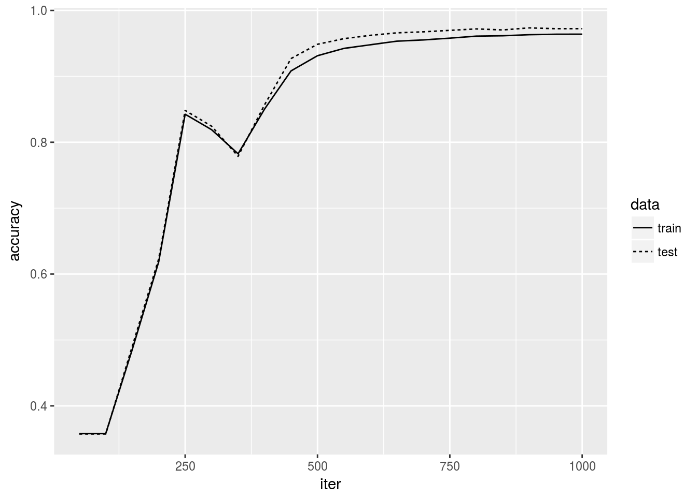

4 Training Neural Network
This chapter corresponds to Chapter 4, “Training Neural Network” in the original book.
4.1 Loss functions
Following implementation of loss functions allow for batch input.
mean_squared_error <- function(p, y)
{
# p: predicted value matrix (N, K)
# y: true value matrix (N, K)
if (is.vector(p)) dim(p) <- c(1, length(p))
if (is.vector(y)) dim(y) <- c(1, length(y))
0.5*sum((p-y)^2)/nrow(p)
}
y <- c(0,0,1,0,0,0,0,0,0,0)
p <- c(0.1, 0.05, 0.6, 0.0, 0.05, 0.1, 0.0, 0.1, 0.0, 0.0)
mean_squared_error(p, y)## [1] 0.0975p <- c(0.1, 0.05, 0.1, 0.0, 0.05, 0.1, 0.0, 0.6, 0.0, 0.0)
mean_squared_error(p, y)## [1] 0.5975cross_entropy_error <- function(p, y)
{
if (is.vector(p)) dim(p) <- c(1, length(p))
if (is.vector(y)) dim(y) <- c(1, length(y))
-sum(y * log(p + 1e-7)) / nrow(p)
}
y <- c(0,0,1,0,0,0,0,0,0,0)
p <- c(0.1, 0.05, 0.6, 0.0, 0.05, 0.1, 0.0, 0.1, 0.0, 0.0)
cross_entropy_error(p, y)## [1] 0.5108255p <- c(0.1, 0.05, 0.1, 0.0, 0.05, 0.1, 0.0, 0.6, 0.0, 0.0)
cross_entropy_error(p, y)## [1] 2.3025844.2 Numerical Differentiation
numerical_diff <- function(f, x)
{
h <- 1e-4
(f(x+h) - f(x-h))/(2*h)
}
func1 <- function(x) { 0.01*x^2 + 0.1*x }
x <- seq(0, 20, 0.1)
y <- func1(x)
library(ggplot2)
qplot(x, y)numerical_diff(func1, 5)## [1] 0.2numerical_diff(func1, 10)## [1] 0.3g <- qplot(x, y)
slope <- numerical_diff(func1, 5)
icept <- func1(5) - slope*5
g1 <- g + geom_abline(slope=slope, intercept=icept, linetype=2)
slope <- numerical_diff(func1, 10)
icept <- func1(10) - slope*10
g2 <- g + geom_abline(slope=slope, intercept=icept, linetype=2)
library(gridExtra)
grid.arrange(g1, g2, ncol=2)4.3 Gradient
func2 <- function(x) { x[1]^2 + x[2]^2 }
x1 <- seq(-3, 3, 0.5)
x2 <- seq(-3, 3, 0.5)
d <- expand.grid(x1=x1, x2=x2)
d$y <- apply(d, 1, func2)
z <- matrix(d$y, nrow=length(x1), ncol=length(x2))
persp(x1, x2, z, theta=30, phi = 40, expand = 0.7, col = "grey", ticktype="detailed")numeric_gradient <- function(f, x)
{
h <- 1e-4
if (!is.array(x)) x <- array(x)
grad <- array(0, dim=dim(x))
for (i in seq_along(x))
{
tmp <- x[i]
x[i] <- tmp + h
f1 <- f(x)
x[i] <- tmp - h
f2 <- f(x)
grad[i] <- (f1-f2) / (2*h)
x[i] <- tmp
}
grad
}
numeric_gradient(func2, c(3, 4))## [1] 6 8numeric_gradient(func2, c(0, 2))## [1] 0 4numeric_gradient(func2, c(6, 0))## [1] 12 0x1 <- seq(-3, 3, 0.5)
x2 <- seq(-3, 3, 0.5)
d <- expand.grid(x1=x1, x2=x2)
d$y <- apply(d, 1, func2)
d$d1 <- -2*d$x1
d$d2 <- -2*d$x2
ggplot(d, aes(x1, x2, xend=x1+d1/20, yend=x2+d2/20)) +
geom_segment(arrow=arrow(length=unit(0.1, "cm")))4.4 Gradient Descent
gradient_descent <- function(f, init_x, lr=0.1, step_num=100)
{
x <- init_x
for (i in 1:step_num)
{
grad <- numeric_gradient(f, x)
x <- x-lr*grad
}
x
}
init_x <- c(-3, 4)
gradient_descent(func2, init_x)## [1] -6.111108e-10 8.148144e-10gradient_descent_plot <- function(f, init_x, lr=0.1, step_num=100)
{
x <- init_x
out <- x
for (i in 1:step_num)
{
grad <- numeric_gradient(f, x)
x <- x-lr*grad
out <- rbind(out, x)
}
dimnames(out) <- NULL
out <- as.data.frame(out)
names(out) <- c("x1", "x2")
x1 <- seq(-5, 5, 0.2)
x2 <- seq(-5, 5, 0.2)
d <- expand.grid(x1=x1, x2=x2)
d$y <- apply(d, 1, f)
ggplot(d, aes(x1, x2)) + geom_contour(aes(z=y)) +
geom_point(data=out, aes(x1, x2)) + xlim(c(-5, 5)) + ylim(c(-5, 5))
}
init_x <- c(-3, 4)
gradient_descent_plot(func2, init_x)gradient_descent_plot(func2, init_x, lr=10)## Warning: Removed 100 rows containing missing values (geom_point).gradient_descent_plot(func2, init_x, lr=1e-10)4.5 Training with numerical gradient
source("common-functions.R")
library(R6)
TwoLayerNet <- R6Class(
"TwoLayerNet",
public = list(
params = list(W1=NULL, W2=NULL, b1=NULL, b2=NULL),
initialize = function(input_size, hidden_size,
output_size, weight_init_std=0.01)
{
self$params$W1 <- matrix(rnorm(input_size*hidden_size, sd=weight_init_std),
nrow=input_size, ncol=hidden_size)
self$params$W2 <- matrix(rnorm(hidden_size*output_size, sd=weight_init_std),
nrow=hidden_size, ncol=output_size)
self$params$b1 <- rnorm(hidden_size, sd=weight_init_std)
self$params$b2 <- rnorm(output_size, sd=weight_init_std)
},
predict = function(x)
{
# args:
# x : N*(input_size) matrix
# Returns:
# N*(output_size) matrix of predicted probability
x <- t(x)
a1 <- crossprod(self$params$W1, x) + self$params$b1
z1 <- sigmoid(a1)
a2 <- crossprod(self$params$W2, z1) + self$params$b2
softmax(t(a2))
},
loss = function(x, y)
{
p <- self$predict(x)
cross_entropy_error(p, y)
},
accuracy = function(x, y)
{
p <- max.col(self$predict(x))
y <- max.col(y)
mean(p==y)
},
.numerical_gradient_each = function(param_name, x, y)
{
# numerical gradient for a single parameter
#
# x: N x input_size matrix
# y: N x output_size matrix of one-hot label
# param_name: character of parameter name
h <- 1e-4
grad <- rep(0, length(self$params[[param_name]]))
dim(grad) <- dim(self$params[[param_name]])
for (i in seq_along(self$params[[param_name]]))
{
tmp <- self$params[[param_name]][i]
self$params[[param_name]][i] <- tmp + h
f1 <- self$loss(x, y)
self$params[[param_name]][i] <- tmp - h
f2 <- self$loss(x, y)
grad[i] <- (f1-f2)/(2*h)
self$params[[param_name]][i] <- tmp
}
grad
},
numerical_gradient = function(x, y)
{
grads <- lapply(names(self$params), self$.numerical_gradient_each, x=x, y=y)
names(grads) <- names(self$params)
grads
}
)
)4.5.1 Mini batch training
source("mnist.R")
library(nnet)
d <- load_mnist(normalize=TRUE, flatten=TRUE, one_hot_label=FALSE)
# Simplify the problem to classification of 1, 2, and 3
# because this naive implementation is slow
ss <- d$train_label %in% c(1, 2, 3)
d$train_img <- d$train_img[ss, , drop=FALSE]
d$train_label <- d$train_label[ss]
ss <- d$test_label %in% c(1, 2, 3)
d$test_img <- d$test_img[ss, , drop=FALSE]
d$test_label <- d$test_label[ss]
# to one-hot format
d$train_label <- class.ind(d$train_label)
d$test_label <- class.ind(d$test_label)
iter_nums <- 1000
train_size <- dim(d$train_img)[1]
batch_size <- 100
learning_rate <- 0.1
network <- TwoLayerNet$new(input_size=dim(d$train_img)[2], output_size=3, hidden_size=3)
train_loss <- numeric(0)
train_acc <- numeric(0)
test_acc <- numeric(0)
for (i in 1:iter_nums)
{
#cat(sprintf("\r%4d/%4d", i, iter_nums))
batch_index <- sample(train_size, batch_size)
x <- d$train_img[batch_index,,drop=FALSE]
y <- d$train_label[batch_index,,drop=FALSE]
grad <- network$numerical_gradient(x, y)
for (name in names(network$params))
{
network$params[[name]] <- network$params[[name]] - learning_rate*grad[[name]]
}
loss <- network$loss(x, y)
train_loss <- c(train_loss, loss)
if (i %% 50 == 1) {
train_acc <- c(train_acc, network$accuracy(d$train_img, d$train_label))
test_acc <- c(test_acc, network$accuracy(d$test_img, d$test_label))
#cat("\n * test and train accuracy =",
# tail(test_acc,1), tail(train_acc,1), "\n")
}
}library(ggplot2)
qplot(1:length(train_loss), train_loss, geom="path") +
xlab("iter") + ylab("train loss")
iter <- 1 + seq(0, length(test_acc)-1)*50
tmp <- rbind(data.frame(iter, accuracy=train_acc, data="train"),
data.frame(iter, accuracy=test_acc, data="test"))
qplot(iter, accuracy, linetype=data, data=tmp, geom="path") +
xlab("iter") + ylab("accuracy")